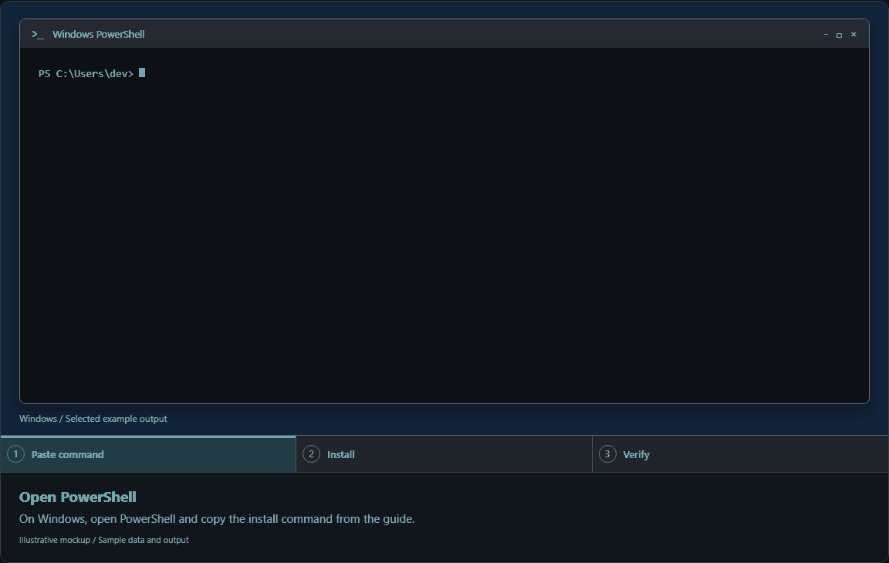
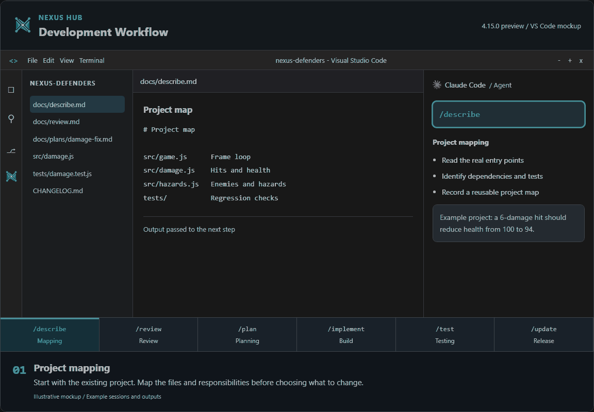
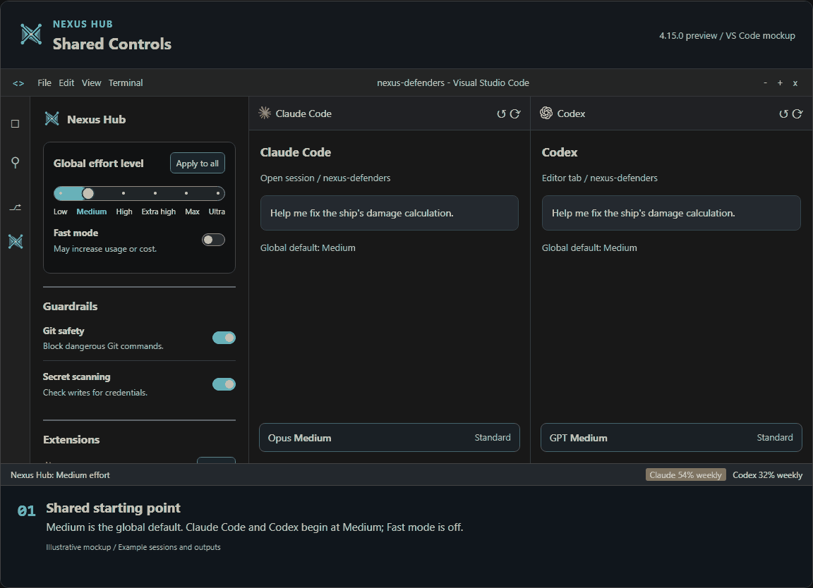
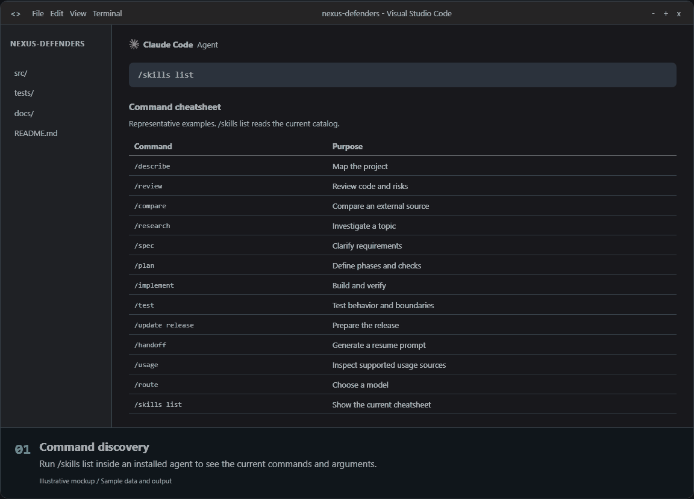

README Visuals
The installer and workflow use the original interactive guide. Settings use the shipped webview. The desktop handoff is an illustrative conversation.
Installation
Open the original installer walkthrough

Development Workflow
Open the original interactive training

Desktop Handoff
Text walkthrough
IDE Settings
Original training IDE shell with the shipped Nexus Hub panel. Sample settings data; no provider is contacted.

Command Cheatsheet
Open the original cheatsheet. Run /skills list for the installed catalog.
